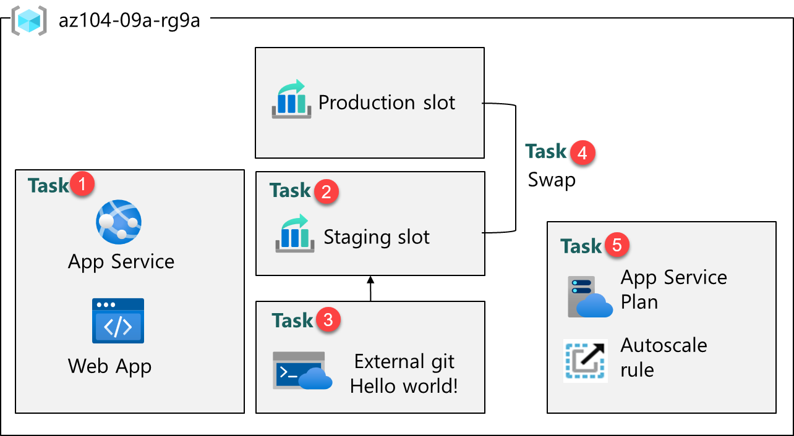
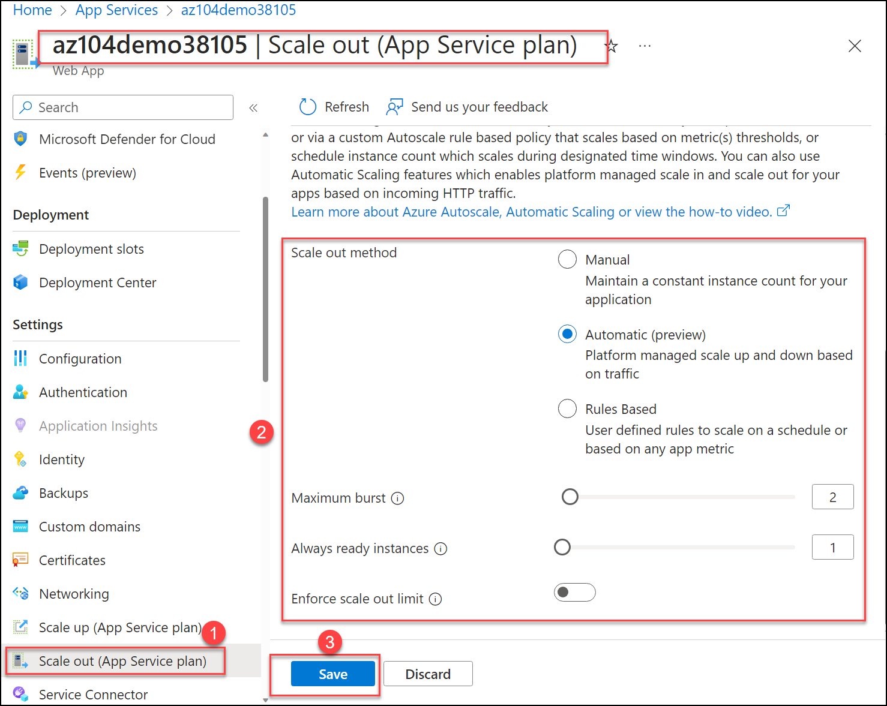

Lab - Implement Web Apps
Lab Introduction
In this lab, you learn about Azure web apps. You learn to configure a web app to display a Hello World application in an external GitHub repository. You learn to create a staging slot and swap with the production slot. You also learn about autoscaling to accommodate demand changes.
This lab requires an Azure subscription. Your subscription type may affect the availability of features in this lab. You may change the region, but the steps are written using East US.
Estimated Timing: 20 Minutes
Lab Scenario
Adamantus Technologies is interested in Azure Web apps for hosting your company websites. The websites are currently hosted in an on-premises data center. The websites are running on Windows servers using the PHP runtime stack. The hardware is nearing end-of-life and will soon need to be replaced. Your organization wants to avoid new hardware costs by using Azure to host the websites.
Interactive Lab Simulations
There are interactive lab simulations that you might find useful for this topic. The simulation lets you to click through a similar scenario at your own pace. There are differences between the interactive simulation and this lab, but many of the core concepts are the same. An Azure subscription is not required.
-
Create a Web App. Create a web app that runs a Docker container.
-
Implement Azure Web Apps. Create an Azure web app, manage the deployment, and scale the app.
Architecture Diagram

Job Skills
- Task 1: Create and configure an Azure web app.
- Task 2: Create and configure a deployment slot.
- Task 3: Configure web app deployment settings.
- Task 4: Swap deployment slots.
- Task 5: Configure and test autoscaling of the Azure web app.
Task 1: Create and Configure an Azure Web App
In this task, you create an Azure web app. Azure App Services is a Platform As a Service (PAAS) solution for web, mobile, and other web-based applications. Azure web apps is part Azure App Services hosting most runtime environments, such as PHP, Java, and .NET. The app service plan that you select determines the web app compute, storage, and features.
-
Sign in to the Azure portal -
https://portal.azure.com. -
Search for and select
App services. -
Select + Create, from drop-down menu, Web App. Notice the other choices.
-
On the Basics tab of the Create Web App blade, specify the following settings (leave others with their default values):
Setting Value Subscription your Azure subscription Resource group az104-rg9(If necessary, select Create new)Web app name any globally unique name Publish Code Runtime stack PHP 8.2 Operating system Linux Region East US Pricing plans Premium V3 P1V3 Zone redundancy accept the defaults -
Click Review + create, and then Create.
Note: Wait until the Web App is created before you proceed to the next task. This should take about a minute.
Note: If the deployment fails, change to another region and try again. This is due to quotas in different regions.
-
After the deployment, select Go to resource.
Task 2: Create and configure a deployment slot
In this task, you will create a staging deployment slot. Deployment slots enable you to perform testing prior to making your app available to the public (or your end users). After you have performed testing, you can swap the slot from development or staging to production. Many organizations use slots to perform pre-production testing. Additionally, many organizations run multiple slots for every application (for example, development, QA, test, and production).
-
On the blade of the newly deployed Web App, click the Default domain link to display the default web page in a new browser tab.
-
Close the new browser tab and, back in the Azure portal, in the Deployment section of the Web App blade, click Deployment slots.
-
Click Add slot, and add a new slot with the following settings:
Setting Value Name stagingClone settings from Do not clone settings -
Select Add to create the slot.
-
Refresh the page to view the Production and Staging slots.
-
Select the entry representing the newly created staging slot.
Note: This will open the blade displaying the properties of the staging slot.
-
Review the staging slot blade and note that its URL differs from the one assigned to the production slot.
Task 3: Configure Web App Deployment Settings
In this task, you will configure Web App deployment settings. Deployment settings allow for continuous deployment. This ensures that the app service has the latest version of the application.
-
In the staging slot, select Deployment Center and then select Settings.
Note: Make sure you are on the staging slot blade (instead than the production slot).
-
In the Source drop-down list, select External Git. Notice the other choices.
-
In the repository field, enter
https://github.com/Azure-Samples/php-docs-hello-world -
In the branch field, enter
master. -
Select Save.
-
From the staging slot, select Overview.
-
Select the Default domain link, and open the URL in a new tab.
-
Verify that the staging slot displays Hello World.
Note: The deployment may take a minute. Be sure to Refresh the application page.
Task 4: Swap Deployment Slots
In this task, you will swap the staging slot with the production slot. Swapping a slot allows you to use the code that you have tested in your staging slot, and move it to production. The Azure portal will also prompt you if you need to move other application settings that you have customized for the slot. Swapping slots is a common task for application teams and application support teams, especially those deploying routine app updates and bug fixes.
-
Navigate back to the Deployment slots blade, and then select Swap.
-
Review the default settings and click Start Swap. Wait for the notification that the swap has finished.
-
Return to the portal home page. You should have both a the production web app and the staging slot.
-
Select the App Service web app and on the Overview blade of the Web App select the Default domain link to display the website home page.
-
Verify the production web page now displays the Hello World! page.
Note: Copy the Default domain URL you will need it for load testing in the next task.
Task 5: Configure and Test Autoscaling of the Azure Web App
In this task, you will configure autoscaling of Azure Web App. Autoscaling enables you to maintain optimal performance for your web app when traffic to the web app increases. To determine when the app should scale you can monitor metrics like CPU usage, memory, or bandwidth.
-
In the Settings section, select Scale out (App Service plan).
Note: Ensure you are working on the production slot not the staging slot.
-
From the Scaling section, select Automatic. Notice the Rules Based option. Rules based scaling can be configured for different app metrics.
-
In the Maximum burst field, select 2.

-
Select Save.
-
Select Diagnose and solve problems (left pane).
-
In the Load Test your App box, select Create Load Test.
- Select + Create and give your load test a name. The name must be unique.
- Select Review + create and then Create.
-
Wait for the load test to create, and then select Go to resource.
-
From the Overview | Create by adding HTTP requests, select Create.
-
On the Test plan tab, click Add request. In the URL field, paste in your Default domain URL. Ensure this is properly formatted and begins with https://. Select Add to save your changes.
-
Select Review + create and Create.
Note: It may take a couple of minutes to create the test. Watch the notifications.
-
Navigate to the test (it is listed on the home page).
-
Refresh and review the live metrics including Virtual users, Response time, and Requests/sec.
-
Select Stop to complete the test run. You don't need to wait for the test to complete.
Cleanup your Resources
If you are working with your own subscription take a minute to delete the lab resources. This will ensure resources are freed up and cost is minimized. The easiest way to delete the lab resources is to delete the lab resource group.
- In the Azure portal, select the resource group, select Delete the resource group, Enter resource group name, and then click Delete.
- Using Azure PowerShell,
Remove-AzResourceGroup -Name resourceGroupName. - Using the CLI,
az group delete --name resourceGroupName.
Key Takeaways
Congratulations on completing the lab. Here are the main takeaways for this lab.
- Azure App Services lets you quickly build, deploy, and scale web apps.
- App Service includes support for many developer environments including ASP.NET, Java, PHP, and Python.
- Deployment slots allow you to create separate environments for deploying and testing your web app.
- You can manually or automatically scale a web app to handle additional demand.
- A wide variety of diagnostics and testing tools are available.
Address: H-34, Ground Floor, Sector 63, Noida, Uttar Pradesh
Email: info@ceekh.com